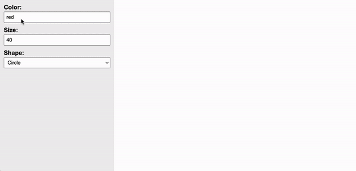

Assignments > Tutorial 8: Make an online drawing program
Due on Fri, 03/31 @ 11:59PM. 6 Points.
Background Readings / References
- How To Write Conditional Statements in JavaScript. Digital Ocean
- The canvas element. W3Schools
- Intro to p5.js
Introduction
Today you are going to create a drawing program as a means to help you practice:
- Accessing user input from form controls
- Working with conditional statements
- Using a third-party library (p5.js) and reading technical documentation.
When you’re done, you will have created something that looks like the video shown below:

Set Up
Please download the tutorial08.zip zip file, extract it, and move the tutorial08 folder inside of your csci185/tutorials folder.
When you’re done, please examine the starter files before beginning the assignment.
index.html
Notice that index.html has a reference to the p5.js library, which has a bunch of functions that we will be using. It also has a reference to main.js, which is the JavaScript file that you will be editing.
In the body section, there are two panels. The panel on the left (<aside></aside> tag) contains some form controls that allow the user of your drawing program to specify the color, size, and shape of the paintbrush. The panel on the right will eventually hold a <canvas></canvas> tag, which is where the user will create their drawing.
<html>
<head>
<title>DOM Demo</title>
<link rel="stylesheet" href="style.css">
<script src="p5.js" defer></script>
<script src="main.js" defer></script>
</head>
<body>
<main>
<aside>
<label for="color">Color:</label>
<input type="text" id="color" value="red" />
<label for="size">Size:</label>
<input type="text" id="size" value="40" />
<label for="shape">Shape:</label>
<select id="shape">
<option value="circle">Circle</option>
<option value="square">Square</option>
<option value="triangle">Triangle</option>
</select>
</aside>
<section id="canvas-holder">
<!-- A canvas element will be inserted here (from main.js) -->
</section>
</main>
</body>
</html>
main.js
You will implement the logic of your drawing program in main.js. At the top, you will see a function called setup() (below), whose job is to create a canvas tag and register it with p5.js. This function is always required, but you do not need to edit it.
function setup() {
// Code to set up the canvas. Do not edit.
const canvasEl = document.querySelector('#canvas-holder');
const canvasWidth = canvasEl.offsetWidth;
const canvasHeight = canvasEl.offsetHeight;
const myCanvas = createCanvas(canvasWidth, canvasHeight);
myCanvas.parent("canvas-holder");
background('#FFF');
}
You will be editing a function called mouseDragged() which is invoked anytime a user drags their mouse on the canvas. Currently, no matter what preferences the user has selected in the left-hand panel, the drag will always make a hotpink circle:
function mouseDragged(){
// Your job:
// When the user drags the mouse on the canvas, you should honor
// the color, shape, and size of the paintbrush that are selected
// in the right-hand panel. Replace the code below with something
// smarter:
fill('hotpink');
circle(mouseX, mouseY, 20);
}
Your Task
Your job is to edit the function body of mouseDragged() so that it honors the user’s color, shape, and size preferences (see animation above):
Tips
Within the mouseDragged() function:
- Create three variables –
color,shape, andsize. Store the value of the user’s preferences in these variables. - Use an if / else if / else statement to figure out which shape to draw
I have pasted some code below that shows you how to make a triangle, circle, and square using p5.js.
// Samples:
// https://p5js.org/reference/#/p5/circle
fill('pink');
circle(400, 400, 100); // x, y, diameter
// https://p5js.org/reference/#/p5/square
fill('navy');
square(50, 300, 50); // x (top left), y (top left), width
// https://p5js.org/reference/#/p5/triangle
fill('teal');
triangle(
50, 50, // first point
30, 80, // second point
70, 80 // third point
)
Optional Assignment Extensions
- Add a fourth shape that a user might choose
- Add the ability for the user to specify the outline color of the shape (currently it defaults to black)
What to Submit
Please Read Carefully: To submit Tutorial 8, please paste the following links into the Moodle under the Tutorial 8 submission section:
- A link to your homepage on GitHub pages, which should link to the drawing program that you just made. See Sarah’s Homepage for an example.
- Note that your homepage should also link to previous tutorials and classwork you have done.
- A link to your GitHub code repository (where your code files are stored).